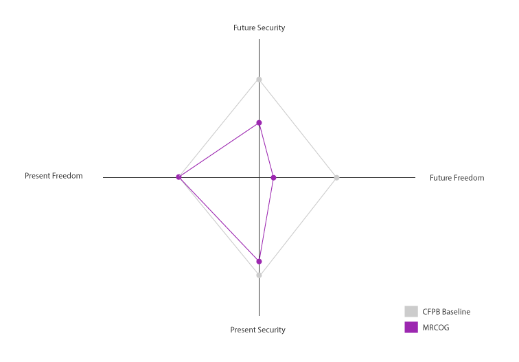

---
layout: manage
id: mrcog
---		
<div id='container'>
    <h1>Financial Wellness Report: MRCOG</h1>
    <a href="../">
      <button class="button reset-btn  mdl-button mdl-js-button mdl-button--raised mdl-js-ripple-effect mdl-button--raised">Compare accumulative data</button>
    </a>
  	<button class="button reset-btn  mdl-button mdl-js-button mdl-button--raised mdl-js-ripple-effect mdl-button--colored" disabled>Recommendations (n/a)</button>
  	<button class="button reset-btn  mdl-button mdl-js-button mdl-button--raised mdl-js-ripple-effect mdl-button--colored" disabled>Resources (n/a)</button>
	 	         
	  <section>
			<h2>Overall Wellness (+/&ndash;)</h2>
			<p>Inside the CFPB baseline is negative and outside is positive.</p>
	           
	        <a href="http://www.consumerfinance.gov/reports/financial-well-being/" target="_blank"><button class="button reset-btn  mdl-button mdl-js-button mdl-button--raised mdl-js-ripple-effect mdl-button--raised"><i class="material-icons">launch</i> Read more about the CFPB Baseline</button></a>    
      </section>
      
      <section id="overview">
        <h2>Overview</h2>
      </section>

      <section id="present-security">
        <h2>Present Security</h2>
      </section>

      <section id="future-security">
        <h2>Future Security</h2>
      </section>

      <section id="present-freedom">
        <h2>Present Freedom</h2>
      </section>

      <section id="future-freedom">
        <h2>Future Freedom</h2>
      </section>
</div>
